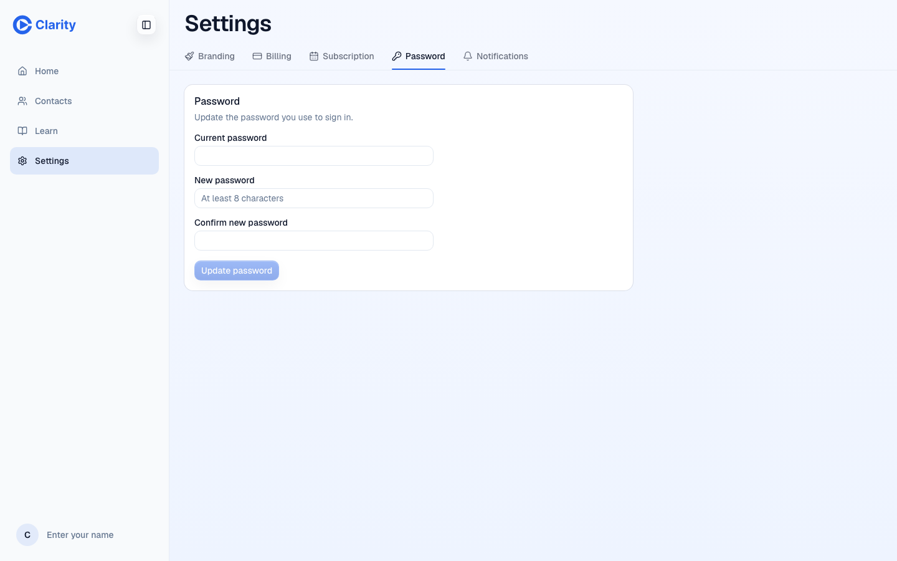
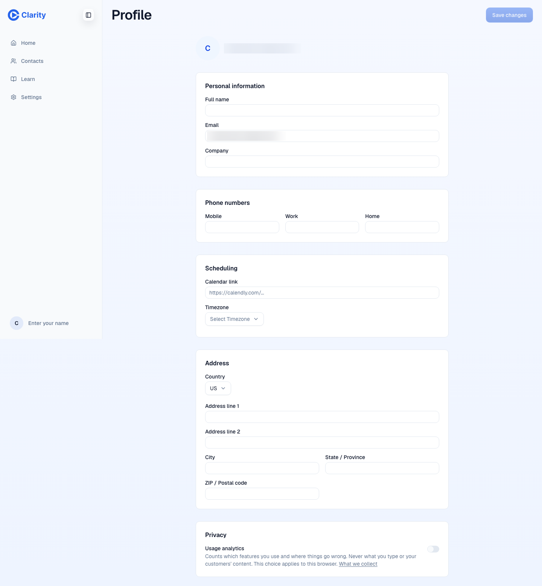
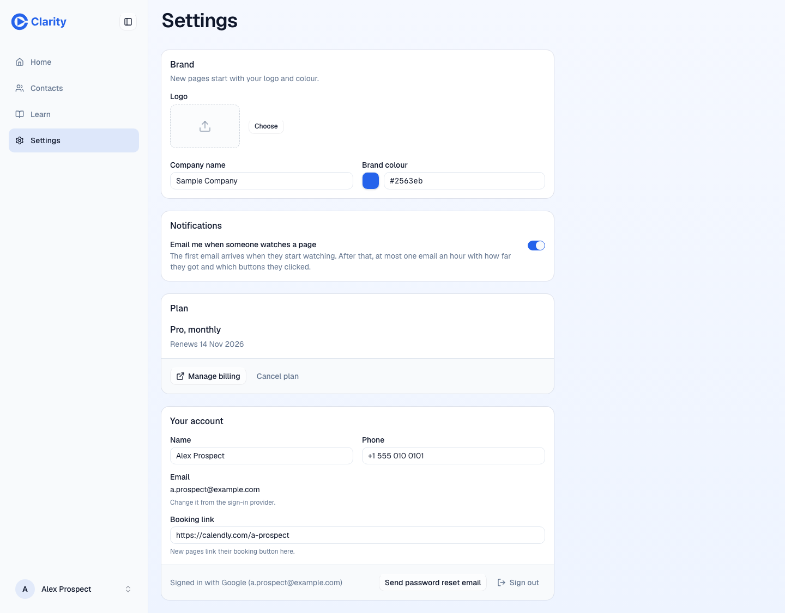
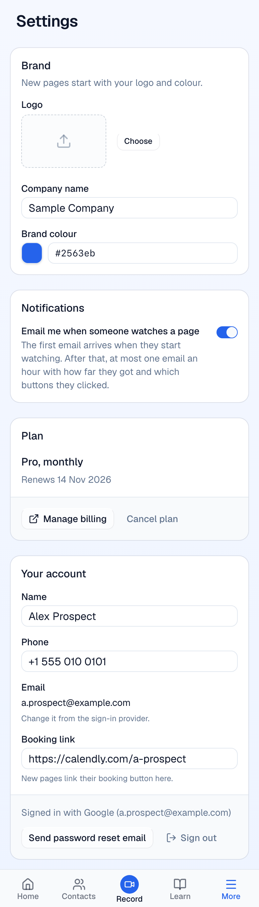

Settings as one page; billing through Stripe; no cancel survey
Settings (Branding, Billing, Subscription, Password, Notifications) and Profile. Billing and the cancel survey are policy calls.
Replace five settings tabs plus Profile with one page: Brand, Notifications, Plan, Your account. The Plan card shows the plan, the renewal or trial date, "Manage billing" and a quiet "Cancel plan". "Manage billing" opens the Stripe customer portal; for the 91% of active rows that have no Stripe customer yet, the card says billing is handled by support@clarity.video. The Password page becomes "Send password reset email", shown only to accounts that sign in with a password. The cancel dialog keeps one confirm and loses the required reason and the re-subscribe question. hello@ on the sign-in rail becomes support@.
Billing and the survey are policy, not UX: say yes or no to each.
The problem
Account settings are spread over six pages (five tabs and Profile) for ten fields that matter. Billing today lists cards with no way to add one and never marks the default card. The Subscription page carries a required cancel reason that no table stores. Password change is a three-field form for something WorkOS already does by email. Two support addresses exist.
What it would look like
Before, six screens. After, one page.







What the data says
Customer subscription rows (1,567 rows, 1,396 users)
| Status | Rows | With a Stripe customer id | With a Stripe subscription id |
|---|---|---|---|
| active | 1,478 | 133 (9%) | 92 |
| cancelled | 54 | 50 | 50 |
| unknown | 29 | 29 | 10 |
A portal link needs a Stripe customer. 1,345 active rows have none; they are legacy imports and the webhook has not written Stripe ids back (known gap). Every cancelled row has cancel_at_period_end set, no active row does.
Cancel survey
| Measure | Result |
|---|---|
| Keys in subscriptions.source_json | id, subscription_name, status, payment_plan, trial and period dates, Stripe ids |
| Any key holding a reason or survey answer | none |
The dialog posts "reason" (SubscriptionRoute.tsx:245). Where the API puts it is not the subscription row; inferred: it is logged or mailed, or dropped.
Sign-in method
| Measure | Customers |
|---|---|
| Google connection on the profile | 721 |
| Microsoft connection | 147 |
| Neither | 1,616 |
These are connected accounts, not the login method. The real split needs the WorkOS API. An account that only signs in with Google has no password, so the reset button must show only for password accounts.
Other code facts: the settings index redirects to Branding (App.tsx:126), not Notifications as the audit said. The portal link code exists (account-billing.ts:144, createPortalLink). support@clarity.video is used in three places, hello@ in one (AuthRoute.tsx:183).
Options
One route, four cards, two policy switches William can say no to without changing the layout.
Keeps a billing UI Clarity has to maintain (and the default-card bug) for 133 accounts that Stripe would serve better.
U02 and U20 do this tonight. This item is about whether to go further.
Questions for William
Recommended: Yes. The portal link code exists; the card list has no add button and never shows the default card.
Recommended: Yes. Nothing stores the answers on the subscription. If William wants the signal, one optional free-text line after the cancel is enough.
Recommended: Yes. Once Contacts and Learn leave the nav (D7), the account menu is the only way into Settings, so it needs the item.
PRs once decided
New /settings route with the four cards; old tab routes redirect. Profile fields that U15 keeps move into "Your account". Evidence: page desktop and phone, every field round-trips.
Plan line, date line, "Manage billing" via createPortalLink, support line when no_customer. Delete BillingRoute.
"Send password reset email" through the existing WorkOS reset flow; hidden for accounts without a password. Delete PasswordRoute.
Delete the reason radio group and the re-subscribe question; hello@ becomes support@ on the sign-in rail.